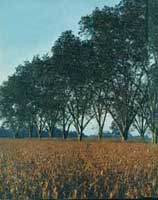
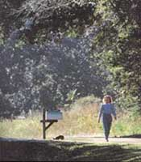
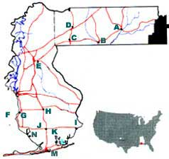
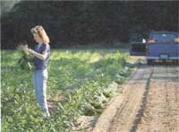
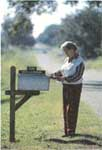
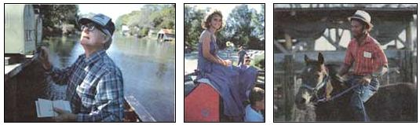
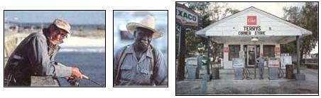
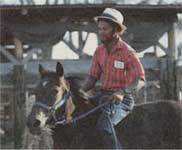
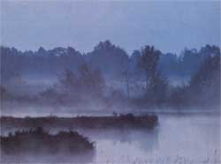
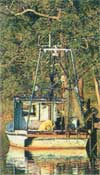

CREAM OF THE COUNTRY
Home sweet Alabama home
A. BREWTON
B. FLOMATON
C. ATMORE
D. POARCH
E. BAY MINETTE
F. MOBILE BAY
G. FAIRHOPE
H. ROBERTSDALE
I. LILLIAN
J. FOLEY
K. ELBERTA
L. ORANGE BEACH
M. GULF SHORES
N. BON SECOUR
Area
Alabama: 50,767 sq. mi.
Baldwin: 1,590 sq, mi .
Escambia: 951 sq. mi.
Population
Alabama: 4,099,400 (est. 1987)
Baldwin: 92,900 (est. 1987)
Escambia: 37,800(1984)
Density
Alabama: 76.7 per sq. mi.
Baldwin: 58.4 per sq. mi.
Escambia: 40 per sq. mi.
Economy
Alabama: 1. paper; 2. chemicals
Baldwin: 1. agriculture; 2. tourism
Escambia: 1. manufacturing; 2. agriculture
Per Capita Income
Alabama: $9,987
Baldwin: $10,331
Escambia: $9,098(1984)
Unemployment
Alabama: 7.9%
Baldwin: 7.1%
Escambia: 12.8%
Expenses
Alabama: Taxes: 4% sales; 1.5% - 5% state income; 5% corp. income
Baldwin: Taxes: 1% county; sales in some municipalities; property, 26 1/2 mills per $1,000 of assessed value
Escambia: Taxes: property, 18.5 mills on 20% of assessed value
Baldwin: Median house value, $54,570; median rental, $390
Escambia: Median house value, $25,500; median rental, $300
Climate
Alabama: Avg. precipitation, 58"; growing season, 236 days; avg. temperature, 65°F; normal daily July high and low, 92°F and 73°F; normal daily January high and low, 62°F and 44°F
Baldwin: Avg. precipitation, 57.12"; growing season, 298 days; normal daily July high and low, 99°F and 77°F; normal January high and low, 73°F and 17°F
Escambia: Avg. precipitation, 56"; growing season, 236 days; avg. temperature, 67.30°F; normal daily July high and low, 90°F and 73°F; normal daily January high and low, 60°F and 42°F
Education
Alabama: 28 state technical colleges, 29 four-year institutions, 27 junior colleges
Baldwin: 32 public elementary, middle & high schools; 2 vocational schools; 1 junior college; 1 university; teacher ratios (high school), 20:1
Escambia: 15 elementary, middle and high schools, 2 private schools,1 city school, 2 vocational centers, 1 state technical college;teacher ratios, 19:1
In recent years, the thought of short, mild winters-even if they're followed by long, hot summers-has enticed thousands to the nation's Sun Belt and driven up prices in Florida, Arizona and Southern California. But there's one spot in the sunny South that's not only still affordable, but also offers sparkling white-sand beaches lapped by the clear, warm waters of the Gulf; some of the best hunting and fishing in the nation; and a gracious, rural lifestyle set in a landscape right out of a Norman Rockwell painting. It's that small segment of the state of Alabama just east of Mobile that reaches down to touch the Gulf of Mexico-a gently rolling, productive land of huge rivers and lakes, thick forests of pine, oak and wild magnolia, and an active business community with international connections.
Though nearby counties in both Florida and Alabama can offer many of the same attractions, we decided to focus on Baldwin County (which actually borders the Gulf and was chosen by Outside magazine as one of the 100 best counties in the United States for outdoor recreation) and Escambia County just to the northeast (which-with its friendly and forward-looking people, its easy access to outdoor pleasures and urban attractions, and its bargain prices for houses and land-is one of the best-kept secrets in the nation).
Baldwin County
Baldwin is Alabama's largest county. It's bordered on the west by Mobile Bay and the River Delta System, on the north by the Little River, on the east by the Perdido River and on the south by the Gulf of Mexico. The northern section contains vast tracts of timberland where deer, squirrels, raccoons and wild turkeys are favorite game. Freshwater fishermen can also find dozens of lakes and hundreds of miles of rivers rich in catfish, bass and bream.
Though the northern section isn't heavily populated, the county seat, Bay Minette, is located here. From this area, near the winding Tensaw lake and river, Hernando deSoto began his expedition through the Americas.
Central Baldwin is devoted to agriculture. While tourism is playing an increasingly larger role in South Baldwin, fishing and agriculture are still of prime importance. Foley, an old farming and railroad town, has soybeans growing right up to the rear of the town's major shopping center. There is, however, a cultural awareness among its 4,500 citizens that a city many times its size could envy. The town's very active Performing Arts Association also brings a variety of high-quality music, dance, theater and visual arts programs to both the community and the schools. The Foley Art Center, housed in a former hotel, has rotating exhibits, lectures, public classes and some irresistible merchandise. (I purchased two lovely batiks.) A citizen described Foley as "a brash little place," but I found the atmosphere comfortable and open-minded.
The surrounding area is composed of very productive agricultural fields, huge, green pastures of grazing cattle, and sprawling pecan groves. Just to the east, on roads bordered by moss-draped oaks, lovely homes with adjoining docks line the Magnolia River. River residents' mail is still delivered by boat, and on hot summer afternoons, children take Tarzanlike swings from a rope into the springs that are the river's source.
Elberta, to the east, was named for the famous peach that was once grown here. Many of its 500 residents descended from the town's original German settlers, and sausage festivals are still held each March and October.
The county's oldest landmark, a Spanish cemetery dating back to the sixteenth century, can be found in the community of Lillian, which overlooks Perdido (Lost) Bay, so named after a storm narrowed this shelter the Spanish used to escape from bad weather and pirates.
A 10-mile drive south from Foley brings you to a different world: a narrow, 32-mile- long beach aptly named Pleasure Island. During the early part of this century, area residents built quaint vacation cottages, homes and small businesses on the brilliantly white, quartz sands, but, in 1979, Hurricane Frederic ripped away many of these old dwellings. (Hurricanes, unfortunately, are a concern here. During my visit, roads marked as evacuation routes were being widened.) Soon, towering resort hotels and condominiums rose out of the destruction. Many regret this development, but Pleasure Island now attracts almost 2 million visitors a year and is a welcome economic bonanza despite the changes this influx of outsiders has made in local lifestyles. (A former flower farm, for example, now grows turf for the area's many golf courses.)
"It's the new American Riviera," one Alabaman told me (hoping, in her next breath, that folks would forget it used to be called the Redneck Riviera). Under any name, the clear, blue water and normally gentle waves make Pleasure Island an ideal playground for children and adults alike. From early spring until late into the fall-and from sunrise until late into balmy nights-families wander the miles of powdery white sand, picking up seashells and wading the shallow waters.
Orange Beach is known for its fine marinas. Its large fleet of charter boats shore-trolls for Spanish mackerel and bluefish and fishes the deep water for king mackerel and bonito. Area wrecks and reefs also abound in red snapper, grouper, amberjack and triggerfish.
Not all of Pleasure Island has given way to commercial development. Just to the east of busy Gulf Shores, Gulf State Park-while offering camping, golf, recreational facilities and even lodging within its convention center-also maintains 6,000 acres of trails, lakes and beaches, including Lake Shelby, whose 700 acres provide the most closely adjoining freshwater and saltwater fishing anywhere in the world-in fact, the lake and Gulf are less than a 10-minute walk apart. Farther to the west, condominiums give way to private homes and the 1,300-acre Bon Secour Wildlife Refuge.
Where Pleasure Island ends at the mouth of Mobile Bay, slave-built Ft. Morgan is the focal point of a 400-acre former military reservation that was the scene of the last battle of the War of 1812 and the Battle of Mobile Bay in 1864. From this Alabama state park, ferries run to Dauphin Island and Ft. Gaines, Ft. Morgan's twin, on the opposite side of Mobile Bay. This ferry ride gives passengers a close-up view of huge oil rigs rising from the bay's waters-since here, as in all of Baldwin and Escambia counties, oil and gas discoveries are playing increasingly important roles. (Anyone buying property in this section of the state should check into any mineral rights that might or might not be a part of the transaction.)
There are a number of charming towns and communities along Baldwin's southwestern waters. Tiny, sleepy Bon Secour, a French fishing village settled in the early 1700s, is hidden away in Bon Secour Bay, but most of the others are situated on bluffs overlooking Mobile Bay.
Just to the north, the city of Fairhope has more than its share of artists and writers, who thrive in (and add to) the town's progressive ways. Flower-lined streets show off charming shops full of tasteful and unique merchandise, and the Fairhope Arts and Crafts Festival is one of the largest in the Southeast.
One of the big events on the Eastern Shore is called Jubilee-and it's a natural phenomenon that occurs nowhere else. Several times a summer-often between midnight and dawn-thousands of fish and/or crabs and/or shrimp - as well as occasional eels - come right up on the shore. Quickly, the word goes out, and residents rush to fill every available container with these delicacies. There are many theories as to what drives the sea life to this strange behavior, but science has yet to confirm one.
Besides old towns and villages, there are planned and retirement communities throughout Baldwin, but most people opt for a rural lifestyle. Farmhouses, large and small, dot the land with prices beginning at about $30,000. And no matter where you live, you're seldom more than an hour's drive-and often only minutes-from any of the area's many recreational attractions, or from the urban amenities, active job markets and medical facilities of Mobile (pop. 475,000) and Pensacola, Florida (pop. 70,000). The same can be said for Escambia County, which is, if anything, even more rural than Baldwin - and less expensive.
Escambia County
When driving Interstate 65 from Mobile to Montgomery, you can zip through a sizable section of Escambia County while seeing little more than rolling farmlands and pine trees. But if, 50 miles from Mobile, you take the exit to Atmore, you'll soon come to a town that retains many of its old-fashioned values while reaching out fearlessly and pragmatically for the best of the high-tech age.
For example, all the students in Atmore's school system-from kindergarten through high school-are trained in computer use, and the high-school building is both heated and cooled by an active solar system. Yet, as I perused the city's impressive new library, I saw some young girls taking a class that seemed quaintly out of the 1940s. It was called "White Gloves and Party Manners," while a related class for boys is known as "Stand Up and Shake Hands." In a world where people have taken to shooting each other for sloppy driving, I found this old-fashioned emphasis on good manners reassuring.
Graciousness was certainly reflected in all my encounters in Escambia. I was even warmly welcomed to the 7:00 a.m., all-male coffee klatch at the Sweet Shop on Main Street, where on any given morning you might find the town's mayor, a Protestant minister or two, a doctor or chiropractor and an assortment of businessmen and retirees. (You can also get the breakfast special-bacon, eggs, grits, biscuits and coffee-for around $2!)
That morning, I asked about real-estate prices, and Philip Underwood-a real-estate agent who had moved to Atmore from Columbus, Georgia-offered to show me some samples.
"It's too bad all those retired navy people who are settling in Pensacola don't know that, 45 miles away, they can get three times the house for their money," he remarked. "Then, too, you don't have to worry about hurricanes in Escambia. Still, you can go to church on Sunday and be picnicking at the beach or fishing on the Tensaw River by 1:30 in the afternoon."
Escambians don't even have to leave their county to enjoy the great outdoors. There's a 180,000-acre wildlife preserve in the Brewton area, and numerous hunting clubs with their own private preserves. Flomaton is a popular spot to begin canoe and tube trips on the Little Escambia River, which winds down to Pensacola. (Canoe rentals are also available there.) The northwestern tip of the county includes part of Little River State Park, with camping and cabin facilities.
As in Baldwin County, agriculture plays a prime role here. Farmland, which can produce three crops in succession a year, is usually sold by word of mouth, and the price per acre can range from $700 to $1,200. Water tables are high and the water quality in both Escambia and Baldwin counties is excellent. There have been, however, some problems with septic drainage in certain areas, so be sure to check such things out before buying.
On the other hand, as is the case in most any rural area nowadays, unemployment is high throughout the region, despite some thriving Escambia businesses and active industry promotion. However, Atmore is proud of the fact that-even during the worst of the recent recessions-none of its companies moved or closed down. Once businesses come into the area, they seem to want to stay. Vanity Fair Mills, for example, has been in Atmore for 36 years and employs up to 900 workers.
Another economic force in the county is the Poarch Band of Creek Indians, part of the legally recognized Creek Nation east of the Mississippi. Much of the tribe's capital comes from its $1,500,000 Bingo Palace. In previous years, the Creeks' main source of income was the annual Thanksgiving Pow-Wow. This celebration, which attracts over 10,000 annually, includes Indian dances and a dance contest, tomahawk throwing and bow and arrow competitions, arts and crafts and a lot of food, including the locally famed Creek Indian roasted corn.
In fact, all Alabamans seem to love festivals and have them frequently. Nearly as famous as the Pow-Wow is the Alabama Blueberry Festival, held each year in Brewton on the third Saturday in June. Though it includes a tennis tournament, hundreds of arts and crafts exhibits, and all kinds of other delicious dishes, fresh berries are the main attraction, and they're served up in a variety of different ways.
But it takes more than delicious food or fine crafts to make a region inviting. It requires good spirits, and the people of southern Alabama also have those in abundance. I was constantly impressed with their openness and their joyous involvement in community affairs. They seem to care deeply about the quality of life in their area and in keeping it prosperous, healthy and fun. But, most of all, I was amazed at their seemingly endless supply of vibrant energy-the kind of vitality that makes exciting things happen.
While you can have a peaceful life in south Alabama, it's unlikely to be dull.
A SNOWBIRD IN THE SOUTH
By John Powell
Northerners in the Deep South are often called snowbirds. It doesn't seem to matter if we're just here to escape the bedeviling winters of our native homes or if we've actually come to stay. (There was, of course, a time when we were given far less complimentary nicknames, but - for most of my neighbors - the edge of that old sword has long since been dulled and retired to a scabbard of antiquity.)
I've lived in Escambia County for more than 10 years now, and more settlers from the Far North seem to be arriving each day. We like it here - and "here" is not one of the Southern urban centers. Cities are cities. We've chosen small town U.S.A. with a rural Southern accent.
Oh, sure, you can expect to experience a degree of culture shock when you first arrive. It isn't describable in positive or negative terms; it's just different. But for those of us who settle in, this is home now. And it's a warm hearth.
I'm from a woodsy setting in the upper Great Lakes region, so adapting to a small town has been easier for me than it might be for someone from a megalopolis. I first came South during my stint in the military and fell in love with the region. Later, as a freshly graduated archeologist and museum curator, I sought to return here to work in an environment that is pleasant year-round and to live in this most cordial and affordable region.
My first impressions have lost some of their shine, like an old penny with a brown patina, but there are some attitudes that can be clearly distinguished as "Northernisms" or as "Southernisms." Please remember, however, that these are more or less broad generalities and aren't meant to apply universally to every particular circumstance or locality.
In terms of working conditions, things here are far more serene than the "dog-eat-dog," frantically paced severity typical of Northern business competition. That's not to say that interpersonal politics don't count. In fact, person-to-person relationships often mean far more than anything else. Loyalty between people here is fierce, and-in business as in society-friends stick by one another. This may not make for the greatest efficiency on earth, but it makes the next day at work a lot nicer to look forward to.
Rather than being chained to a specialty within the working environment, people are generally encouraged to expand their abilities. There's an interesting (and very logical) philosophy at work here: People tend to do better if they are happy and if they like what they're doing, and the more an employee can learn to do while working within a given sphere, the more value he or she will have to the business and to working companions. There tends to be, therefore, far more flexibility than a mere job description might imply. The bottom line is that, for the most part, the fear that the guy next to you is out to get your job is all but nonexistent; cordiality and relaxed amiability dominate over the antagonistic-threat behavior patterns so typical elsewhere.
Through a combination of moderate climate, lower building-supply costs and low rates of state and local taxes, the cost of living comfortably is dramatically lower in the South than in the North. Salaries are often lower as well, but-generally speaking-a middle-income family can live better with more money left over for recreation than nearly anywhere else in the country. And if you seek the quiet country life, good land can be had for a mere fraction of its equivalent elsewhere.
In small towns the privacy and anonymity of urban life are, of course, sacrificed, but the warmth and friendship of neighbors who care about you more than compensate for that. If you're in any sort of trouble, you know that you're never far from someone who will be more than happy to help. Even the police here are, in the truest sense, public servants. If your car door is locked, they'll be there in five minutes to help you open it (although most of us never have to bother with locking our cars anyway; theft of that sort is nearly unheard of). And if there's a real emergency, call 911 and count to 60. Help will be there, and what a blessing that can be!
But waistline watchers, beware! Southern cooking is hazardous to your diet! There's nothing anywhere that can compete with a good home-style Southern meal. Nor does anything else known to culinary science find ways in which to squeeze more calories per gram. Once you get hooked, you're doomed! [Editor's Note: If you'd like to experience some real Southern cooking, turn to page 68. ]
Southern politics are, of course, notorious. A Northerner will, perhaps, reel at the array of weaponry unleashed by a smattering of opposing political candidates during an election year. Never did the Three Stooges stage such a pie-throwing, nose-pinching, eye-poking, mud-slinging free-for-all as sometimes occurs in Southern political contests. The best advice is to sit back and enjoy the show. It's better than the Saturday night fights, roller derby and mud wrestling combined!
Remember, too, you'll be in the Bible Belt. We snowbirds are accustomed to more or less quiet, subdued religious practices. Here, instead of asking, "Where are you from?" or "What do you do for a living?," a person often first inquires, "What church do you attend?" or "Have you been saved?" There's nothing wrong with that, of course, but I just wasn't used to having strangers so very concerned about the ultimate destination of my immortal soul. Just remember that churches are the true center of most social activity and interpersonal fellowship in the South's smaller communities, and their influence as a collective force is significant. It's a gesture of friendship (as well as policy) to try to recruit your attendance and ultimate membership. Take no offense.
In a way, living in the rural South is like stepping into the past. Traditional values are maintained, and words like honor and trust still have meaning. Overall, I highly recommend it as a place to live, work and raise a family. South Alabama is particularly ideal because of its proximity to large (but not too large) metropolitan centers and conveniences, the friendliness of the people and the quality of life available within a broad spectrum of professions and occupations.
If I had one thing above all others to say as a compliment to this region, it would be this: Here, each person has a value beyond statistical or numerical description. We matter to each other. And that's a truly nice feeling.
John Powell is a professor of history and archeology at Jefferson Davis State Junior College in Brewton, Alabama. Related Article: True Grits : A new Southern cook looks at an old Southern Food
|
 By Sara Pacher. Joy Lowery from Loxley in agriculturally rich Central Baldwin sells her neighbor's homegrown produce out of the back of her truck. |
 Here are some southern Alabama locals from (left) Clifford James, the river postman, to (center) Foley's Homecoming Queen, to (right) a Canoe's Horse Auction Fan |
 Some folks (left) hang out at the pier at the Gulf shores. ""Willy"" Frankman (center) prefers Magnolia Springs' general store. Terry's Corner Store (right) is just a few miles outside of Atmore. |
|
Here are some southern Alabama locals from (left) Clifford James, the river postman, to (center) Foley's Homecoming Queen, to (right) a Canoe's Horse Auction Fan. |
Sunrise, like everything( else in Escambia County) has a charm all its own. |
|
|
|
|
 |
|
 |
 |
 |
|
 |
 |
 |